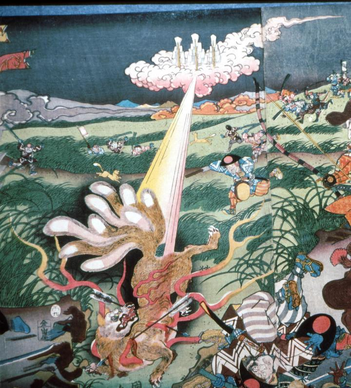

白面金毛九尾の狐。雲上から神の光がさし、狐を焼いている。また肩と腹に矢が刺さっている。
著作者：歌川国久／出典：親書誌：A5_pushkin_0030：三浦上総両介那須野九尾狐討取；ミウラカズサリョウスケナスノキュウビノキツネウチトリ／日付：2011／資源識別子：A5_pushkin_0030_0001_0000
Copyright (c)2010- International Research Center for Japanese Studies, Kyoto, Japan. All rights reserved.